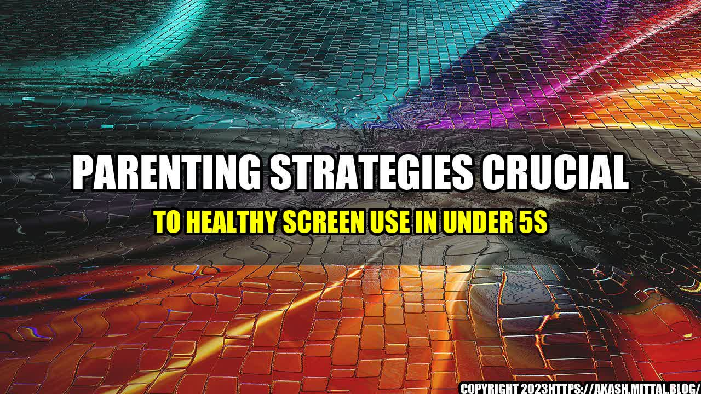

HTML5 Format:
Parenting Strategies Crucial to Healthy Screen Use in Under 5s
Parenting Strategies Crucial to Healthy Screen Use in Under 5s

A few years ago, my friend Amy noticed that her three-year-old daughter Emma was spending a lot of time with her iPad. Emma loved playing games and watching videos on YouTube Kids, but she was becoming less interested in other activities like reading books, playing outside, and connecting with friends.
Amy knew that too much screen time could be harmful to Emma's health and development, so she decided to set some limits. She started by talking to Emma about the benefits of doing other things, like exercising her body and imagination, and she encouraged her to try new activities.
At first, Emma resisted the change and whined about wanting to use her iPad more. But over time, she began to enjoy other things and even asked for less screen time. Now, Emma is a happy and well-rounded child who loves to explore the world around her.
The American Academy of Pediatrics (AAP) recommends that children ages 2 to 5 should have no more than one hour of high-quality screen time per day.
However, according to a survey of parents by the non-profit organization Common Sense Media, 38% of children ages 2 to 4 watch more than two hours of screen media per day, and 17% watch more than three hours per day.
These statistics are concerning because research has shown that excessive screen time can lead to a host of issues, including:
- Obesity and poor physical health
- Poor sleep quality and quantity
- Delayed language development and social skills
- Decreased attention span and cognitive ability
An
How to Raise a Healthy and Happy Child in the Digital Age: Parenting Strategies for Under 5s
and Case Studies
My friend Amy's experience with her daughter Emma is just one example of how setting limits on screen time can be beneficial for young children. Many other parents have shared similar stories, and there are also studies that support this approach.
For instance, a study published in JAMA Pediatrics found that children who had less screen time at ages 2 and 3 had better scores on developmental tests at ages 3 and 5 compared to children who had more screen time.
Another study published in the Journal of Pediatrics found that children who watched educational content with their parents had better language development than children who watched alone.
Practical Tips
- Set limits: Talk to your child about the benefits of doing other activities and set a screen time limit that works for your family. Use a timer or a digital device that automatically shuts down when the time is up.
- Model healthy behavior: Children learn by example, so make sure you are also limiting your own screen time and engaging in other activities with your child.
- Choose high-quality content: Look for age-appropriate and educational content that promotes creativity, critical thinking, and social skills.
- Excessive screen time can be harmful to young children's health and development.
- Setting limits on screen time and encouraging other activities can promote physical, social, and cognitive development.
- By modeling healthy behavior and choosing high-quality content, parents can raise healthy and happy children in the digital age.
References, URLs, Hashtags, SEO Keywords, Category
References:
- American Academy of Pediatrics. (2016). Media and young minds. Pediatrics, 138(5), e20162591. https://doi.org/10.1542/peds.2016-2591
- Common Sense Media. (2017). The common sense census: Media use by kids age zero to eight. https://www.commonsensemedia.org/research/the-common-sense-census-media-use-by-kids-age-zero-to-eight-2017
- Chonchaiya, W., & Pruksananonda, C. (2008). Television viewing associates with delayed language development. Acta Paediatrica, 97(7), 977–982. https://doi.org/10.1111/j.1651-2227.2008.00831.x
- Linebarger, D. L., & Walker, D. (2005). Infants' and toddlers' television viewing and language outcomes. American Behavioral Scientist, 48(5), 624–645. https://doi.org/10.1177/0002764204271505
URLs:
- https://www.aap.org/en-us/about-the-aap/aap-press-room/pages/media-and-children.aspx
- https://www.commonsensemedia.org/research/the-common-sense-census-media-use-by-kids-age-zero-to-eight-2017
- https://onlinelibrary.wiley.com/doi/abs/10.1111/j.1651-2227.2008.00831.x
- https://journals.sagepub.com/doi/10.1177/0002764204271505
Hashtags:
- #parentingstrategies
- #screenuse
- #childrenshealth
SEO Keywords:
- parenting strategies
- screen use
- under 5s
- healthy child development
Category:
- Parenting
- Child Development
- Screen Time
Curated by Team Akash.Mittal.Blog
Share on Twitter Share on LinkedIn